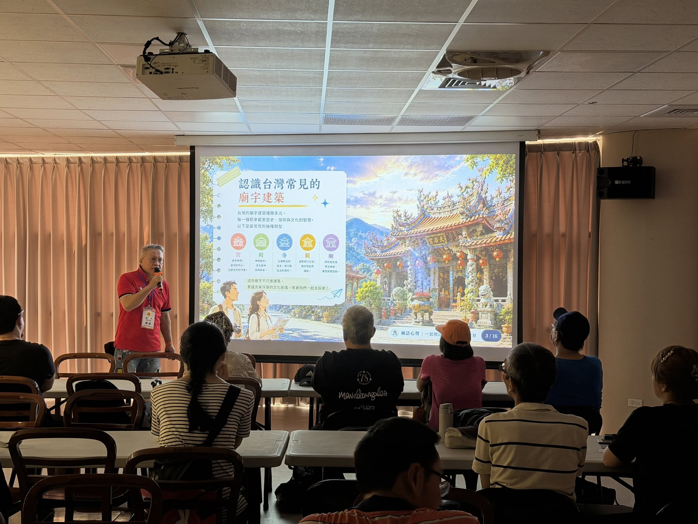

廟語心聲｜信仰文化

HOW WE READ A TEMPLE
廟宇不是答案，而是一部等待被閱讀的生活之書。
屋脊的曲線、石雕留下的題材、匾額上的文字、祭典中的人群，都不是孤立的裝飾。當我們把它們放回地方歷史、生活習慣與人的故事裡，一座熟悉的廟就會重新變得有意思。
LOOK｜看見先看一個細節
屋脊、石雕、匾額、門窗、空間秩序，都是閱讀的入口。
CONNECT｜連結再回到地方
把眼前所見連回地方發展、信仰習俗與居民生活。
UNDERSTAND｜理解最後讀懂文化
不只記年代與名稱，而是理解它為何成為今天的樣子。
A LIVING CULTURAL BOOK
一座廟，就是一本立體的文化故事書。
我們經常走進廟宇祈求平安、健康、財富與姻緣，卻很少停下腳步，好好看看眼前的建築。屋脊上的人物、龍柱、石雕與剪黏，乃至不同神祇與一代又一代人的願望，都保存著臺灣的建築工藝、民間信仰與地方記憶。
《廟語心聲》不是帶你「看一間廟」，而是邀請你學會「讀一間廟」。
看懂廟宇裡的文化密碼
從建築格局、傳統工藝到裝飾圖騰，從「看熱鬧」走向「看門道」。屋脊人物、石雕、剪黏與花鳥瑞獸，都可能是匠師藏進建築裡的故事、祝福與人生智慧。
從神明故事理解臺灣人的生活
不只認識神祇名稱，更從地方信仰理解人們對平安、正義、富足、人際關係與幸福的期待；看見信仰如何與一個地方的生活彼此交織。
古老故事，其實離我們並不遠
善惡與責任、得到與失去、人與人的關係，以及每個人對平安幸福的追求，都是跨越時代仍然存在的生命課題。傳統故事因此不只屬於過去，也能成為今天重新理解生活的一個角度。
把文化帶回當下
當我們理解建築、文化與故事，也多了一個重新觀看自己的角度。廟宇不只是知識的終點，而是讓文化與自己的生活重新發生關係。
CULTURE DECODING
原來廟宇裡，每一個細節都可能正在說話。
《廟語心聲》的閱讀，不從背年代開始，而從「你看見了什麼？」開始。先觀察，再理解符號與空間，最後把文化重新連回人的生活。
先讀空間｜一座廟怎麼安排世界
從龍門、虎門、三川殿、正殿到後殿，空間配置不只是動線，也反映秩序、信仰與傳統建築的觀看方式。
再看守護｜石獅與門前角色
入口前的石獅不只是裝飾。公母、腳下物件與造型細節，都可能承載守護、吉祥與家族延續等文化寓意。
抬頭看屋脊｜龍、麒麟與吉祥圖像
龍、麒麟等瑞獸把傳說與祝福放到建築最高處。辨認圖像只是第一步，更重要的是理解人們為何把這些象徵留在生活空間裡。
找生活密碼｜蝙蝠、魚、鹿與植物
從諧音、品格到長壽象徵，蝙蝠、魚、鹿、松竹梅等圖像，把祝福與價值觀變成人人看得見的文化語言。
最後讀細節｜花瓶、花磚與器物
一只花瓶、一塊綠釉花磚，甚至器物名稱的諧音，都可能藏著平安、吉慶與古人的生活巧思。
下一次走進廟裡
不要急著找答案。先找一個你以前沒有注意過的細節，再問自己：它為什麼會出現在這裡？
看懂一座廟，就多理解一點臺灣；理解一段文化，也多了一個重新觀看人生的角度。
廟語心聲｜閱讀建築・閱讀文化・閱讀人生・閱讀自己